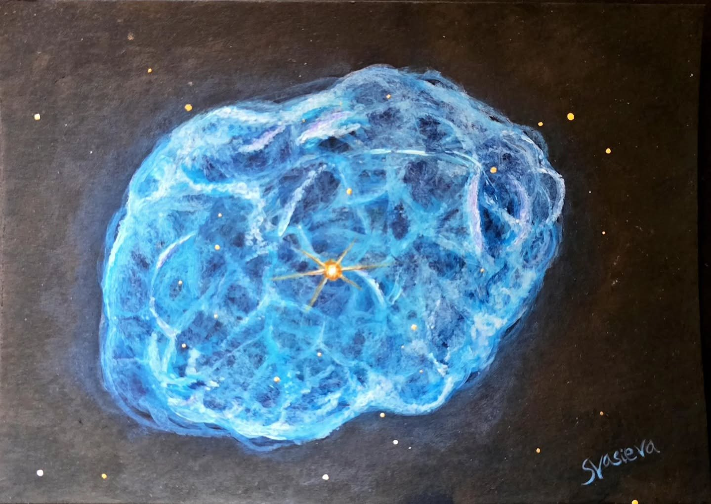

NGC 1501, the Camel's Eye Nebula
A watercolour interpretation of NGC 1501, also known as the Camel's Eye Nebula or the Oyster Nebula. It's a planetary nebula in the constellation Camelopardalis.

A watercolour interpretation of NGC 1501, also known as the Camel's Eye Nebula or the Oyster Nebula. It's a planetary nebula in the constellation Camelopardalis.